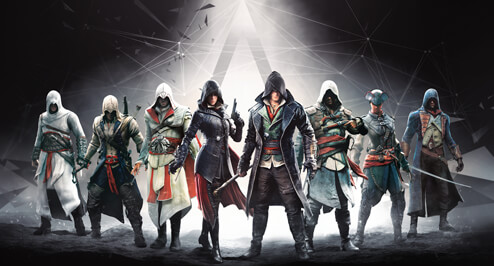

This is the place where you and I can write our views on any subject. Share new ideas
and meet new people with different views. Email me your post and I'll publish it here.
Amazing ways to speed up your morning routine
by Abhinav Agnihotry
Get out the door on time with a spring in your step using these quick and easy hacks.
Hang your outfit the night before
Attach an adhesive hook to your wardrobe door and use it to hang up the following day’s clothes, including all underwear and socks. Get into this evening habit, and you’ll easily save yourself a frantic 10 minutes in the morning rummaging through your wardrobe.Wake up energised
Wake up on the right side of the bed with the Sleep Cycle Alarm Clock app. Just set the alarm for a 30-minute window, and the soothing alarm sounds will only trigger during a light sleep phase so you wake up naturally and feel rested. Use it for more than a week, and you’ll begin to see graphs and trends showing sleeping patterns according to days of the weeks, the moon, weather and daily activity.Time your morning shower
Set an alarm on your phone for a maximum of five minutes to encourage you to quicken the pace. Multi-task by lathering up with body wash while you condition your hair or shave.Organise your bathroom
Have your daily showering essentials like shampoo, body wash and a razor at arm’s length away for maximum efficiency.Try magnetic strips on your bathroom cabinet to store hair accessories, tools and cosmetics for quick and easy access. If you have a small bathroom, check out our tips for organising it with our clever storage hacks.

For more click here..
Assassin's Creed
by Praveen Agnihotry
World’s most famous action-adventure video-game franchise.
Assassin's Creed is an action-adventure franchise which takes inspiration from the real-world historical events. The games in this series are set in different locations around the world and tell a fictional story about how the 'Assassins' and 'Templars' affected the history. The series basically depicts the conflict between two groups, the 'Assassins' and 'Templars'. The Templars desires the world peace through control while the Assassins believe in free will.

Up until Assassin's Creed III the story revolves around the character Desmond Miles, who is being used by Abstergo Industries, to reveal the positions of powerful ancient artifacts left by the old civilization. Later in the first assassin's creed game it is revealed that Abstergo Industries is a templar organization and Desmond Miles is a descendent of assassins.
Abstergo industry uses the 'Animus' to bring out the memories of the ancestors of the one using it. When Desmond gets to know about that he runs away and finds the artifacts and the 'Apple of Eden' himself and later sacrifices his life to save the world from destruction. Later games in the series provide a story about the Abstergo industries' and how they obtain the ancient artifacts and assassins descendents oppose them.
Assassin's creed games are famous for their vast open world and storytelling with Assassin's creed 2 and Assassin's Creed 4: Black Flag considered critically the best in the series.
Authors' Corner

Abhinav Agnihotry
A Tech Enthusiast